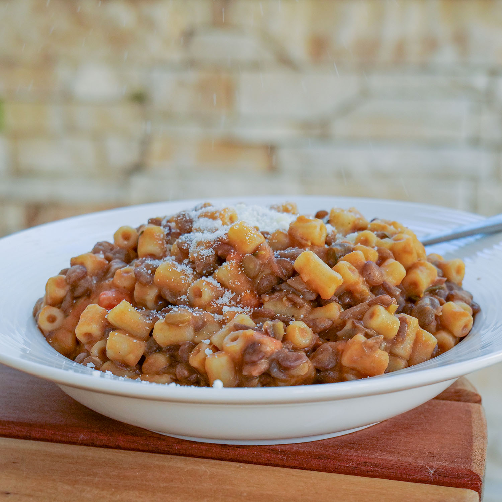

Italian Lentil Pasta

Description
When craving real comfort food, pair lentils with pasta for a balanced, wholesome, and heartwarming soup in less than one hour. Also known as pasta e lenticchie (pasta with lentils), this lentil dish is a nutritious and flavorful Italian delicacy made with ditalini pasta cooked in a rich and flavorful stew.
An excellent choice to enjoy the nutritional benefits and high mineral and fiber content of lentils, this one-pot lentil pasta recipe is super easy to make and requires just a few pantry ingredients. A nutrient-dense vegan main dish for lunch or dinner, kid-friendly, excellent for meal prep, and has all the elements to make tummies happy.
Ingredients
- Ditalini Rigati Pasta
- Lentils
- 1 Carrot chopped
- 1 Celery stick chopped
- ½ Onion
- 2 Garlic cloves crushed
- Rosemary fresh
- 1 L Vegetable stock 4.2 cups
- Pecorino Cheese As much as preferred
- 5 tbsp Tomato Passata
- Extra Virgin Olive Oil EVOO
- Salt and pepper as much as required
- Guanciale or pancetta optional
Steps
- Put your large pot on the stove at medium heat and add 5 tablespoons of EVOO.
- Add chopped carrots, celery, and onions and cook for about 10 minutes while stirring occasionally along with a small amount of vegetable stock to prevent veggies from burning.
- Mix through the crushed garlic cloves, followed by more vegetable stock and a few sprigs of rosemary sprigs, then stir to combine.
- Once the veggies become tender, add guanciale and let it cook until it starts to brown
- Add lentils; tossing them before adding stock so they absorb all the liquid.
- Pour in half of the vegetable stock and give everything a good stir, then add 5 tablespoons of tomato passata and mix it through.
- Cook on medium-high heat and keep an eye on lentils to make sure they don’t dry up by adding water or stock as required.
- Next, mix through the remaining vegetable stock, cover the pot, and let the lentils cook for 10 minutes.
- Once the lentils turn soft with a slight crunch, remove the rosemary.
- Add the pasta and stir well before adding the water, then let the pasta cook until al dente
- Taste it to check the texture, then add water so it is covered before a sprinkle of salte and pepper.
- Cover the pot with a lid, and let it cook for about 5 minutes then stir well so nothing sticks to the bottom.
- Add more water as the pasta absorbs liquid quickly then get the pot off the stove, let the pasta rest for about a minute, and stir to make sure nothing is stuck to the bottom.
- Toss the pasta a little bit and add some pecorino cheese on top before another sprinkle of cheese and mix it one final time.
- Serve this creamy lentil pasta on a large serving plate with a generous sprinkling of -you guessed it – more pecorino cheese!